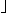
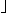

![[Front]](images/OpenGL3.gif)
![[Reference]](../buttons/ReferenceOff.gif)
![[Imp. Guide]](../buttons/ImpGuideOff.gif)
![[Index]](../buttons/IndexOff.gif) glBitmap: draw a bitmap.
glBitmap: draw a bitmap.
C Specification |
Parameters |
Description |
Notes |
Errors |
Associated Gets |
See Also
void glBitmap(
GLsizei width,
GLsizei height,
GLfloat xorig,
GLfloat yorig,
GLfloat xmove,
GLfloat ymove,
const GLubyte *bitmap)
- width, height
- Specify the pixel width and height of the bitmap image.
- xorig, yorig
- Specify the location of the origin in the bitmap image. The origin is
measured from the lower left corner of the bitmap, with right and up being
the positive axes.
- xmove, ymove
- Specify the x and y offsets to be added to
the current raster position after the bitmap is drawn.
- bitmap
- Specifies the address of the bitmap image.
A bitmap is a binary image. When drawn, the bitmap is positioned relative to
the current raster position, and frame buffer pixels corresponding to 1s in
the bitmap are written using the current raster color or index. Frame buffer
pixels corresponding to 0s in the bitmap are not modified.
glBitmap takes seven arguments. The first pair specifies the width
and height of the bitmap image. The second pair specifies the location of the
bitmap origin relative to the lower left corner of the bitmap image. The
third pair of arguments specifies x and y
offsets to be added to the current raster position after the bitmap has been
drawn. The final argument is a pointer to the bitmap image itself.
The bitmap image is interpreted like image data for the glDrawPixels command, with
width and height corresponding to the width
and height arguments of that command, and with type set to
GL_BITMAP and format set to
GL_COLOR_INDEX.
Modes specified using glPixelStore
affect the interpretation of bitmap image data; modes specified using glPixelTransfer do not.
If the current raster position is invalid, glBitmap is ignored.
Otherwise, the lower left corner of the bitmap image is positioned at the
window coordinates
xw =
 xr
xr
 xo 
xo 
yw =
yr
yo
where ( xr , yr ) is the
raster position and ( xo , yo
) is the bitmap origin. Fragments are then generated for each pixel
corresponding to a 1 (one) in the bitmap image. These fragments are generated
using the current raster z coordinate, color or color index,
and current raster texture coordinates. They are then treated just as if they
had been generated by a point, line, or polygon, including texture mapping,
fogging, and all per-fragment operations such as alpha and depth testing.
After the bitmap has been drawn, the x and y
coordinates of the current raster position are offset by xmove
and ymove. No change is made to the z
coordinate of the current raster position, or to the current raster color,
texture coordinates, or index.
To set a valid raster position outside the viewport, first set a valid raster
position inside the viewport, then call glBitmap with NULL
as the bitmap parameter and with xmove and
ymove set to the offsets of the new raster position. This
technique is useful when panning an image around the viewport.
- GL_INVALID_VALUE is generated if width or
height is negative.
- GL_INVALID_OPERATION is generated if glBitmap is executed between the
execution of glBegin and the
corresponding execution of glEnd.
glGet with argument
GL_CURRENT_RASTER_POSITION
glGet with argument
GL_CURRENT_RASTER_COLOR
glGet with argument
GL_CURRENT_RASTER_INDEX
glGet with argument
GL_CURRENT_RASTER_TEXTURE_COORDS
glGet with argument
GL_CURRENT_RASTER_POSITION_VALID
glDrawPixels,
glPixelStore,
glPixelTransfer,
glRasterPos
![[Prev]](buttons/ArrowLeftOff.gif)
![[Next]](buttons/ArrowRightOff.gif)
![[Up]](buttons/ArrowUpOff.gif) C Specification
C Specification